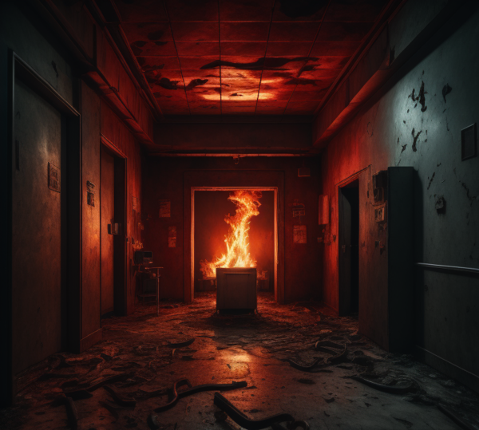

LABIRINTO
Explore o corredor à sua esquerda
Tome coragem e adentre o corredor à sua frente
Arrisque sua sanidade e se embrenhe no corredor à sua direita
Tente encontrar uma fonte de luz
Grite por ajuda
Siga os sons misteriosos que ecoam pelo labirinto
Tente encontrar o caminho de volta ao ponto de partida
Continue em frente, confiante em encontrar a saída
Siga as marcas de sangue para descobrir o que está acontecendo
Ignore as marcas e continue explorando
Entre na porta entreaberta
Evite a porta e continue
- Grite por socorro novamente
Explore a sala em busca de pistas
Saia correndo da sala
Sente-se no chão, desesperado
Encontre uma passagem secreta
Ignore a passagem e procure outra saída
Questione se tudo é real
Continue avançando para a luz
Volte correndo com medo da luz
Grite por ajuda
9a
9b
9c
Enfrente a figura
Tente se esconder
Tente acordar do pesadelo
11a
11b
11c
acorde!
